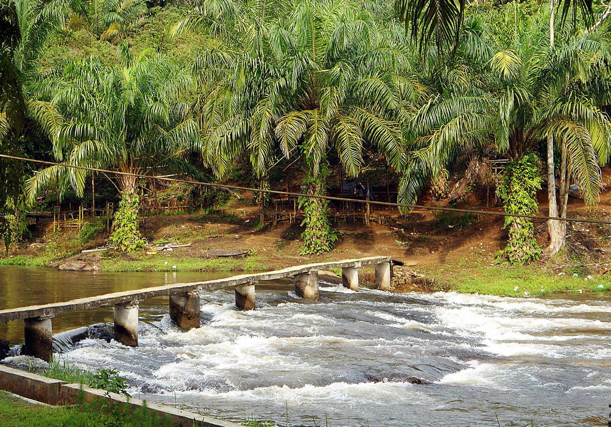

Sejarah
Berdasarkan sejumlah bukti sejarah berupa kuburan dan sebagiannya, diperkirakan Kotapinang telah berdiri sejak 250 tahun yang lalu. Kesultanan Kotapinang pada mulanya bernama Kesultanan Pinang Awan. Konon, yang membuat nama Kota Pinang melekat disebabkan di sepanjang sungai Barumun dulunya berpagar Pinang. Sehingga sejak saat itu Kota Pinang dikenal dengan Pagar Pinang, karena Kota Pinang awalnya sebuah kesultanan, maka kala itu Kota Pinang dipimpin oleh seorang Sultan. Sultan yang pertama memerintah adalah Sultan Batara Sinombah yang disebut juga dengan Sultan Batara Guru Gorga Pinayungan, yang memiliki makam di Hotang Mumuk Negeri Pinang Awan. Sultan Batara Sinombah merupakan keturunan dari alam Minang Kabau Negeri Pagaruyung yang bernama Sultan Alamsyah Syaifuddin.
Pada waktu itu Tanggal 22 Juli Tahun 2002 Datang saudara Rifai Nasution bersama 2 rekannya ke rumah Almarhum H Rustam Nasution membawa beberapa berkas. Dalam pertemuan itu H. Rustam Nasution didampingi oleh temannya yakni Mirwan Hasibuan dan Rifai Nasution berbincang membahas agar meminta H. Rustam Nst dapat membahas hasil penelitian tim perumusan pemekaran Kabupaten Labuhanbatu.Tanggal 24 Juni Tahun 2007, DPR RI yang ketika itu Sidang Paripurna Dipimpin Muhaimin Iskandar Memutuskan 12 Daerah serentak dimekarkan, maka dari hasil penetapan itu salah satu Kabupaten Labuhanbatu Selatan di syahkan sesuai UU No. 22 Tahun 2007 dan begitu juga dengan Kabupaten Labuhanbatu Utara seauai UU No. 23 Tahun 2007.
Geografis

Secara geografis Kabupaten Labuhanbatu Selatan terletak diantara koordinat 10 26’ 00’’ sampai
dengan 20 12’ 55’’ Lintang Utara dan 990 40’ 00’’ sampai dengan 1000 26’ 00’’ Bujur Timur. Kondisi geografis
wilayah Kabupaten Labuhanbatu Selatan termasuk kedalam kawasan dataran rendah yang berada pada daerah
transisi antara kawasan pesisir (pantai timur) dengan kawasan pegunungan (dataran tinggi bukit barisan).
Kabupaten Labuhanbatu Selatan berbatasan langsung dengan Provinsi Riau.
Secara topografis Kabupaten Labuhanbatu Selatan berada pada ketinggian 100 s/d 500 M
diatas permukaan laut. Pada umumnya Kabupaten Labuhanbatu Selatan berada pada ketinggian kurang dari
100 M diatas permukaan laut. Ketinggian antara 100 – 500 M diatas permukaan laut hanya terdapat di
Kecamatan Sungai Kanan, tepatnya pada bagian barat yang berbatasan dengan Kabupaten Padang Lawas
Utara
Kondisi Topografi Daerah Kabupaten Labuhanbatu Selatan pada dasarnya memiliki potensi alam yang cukup
sesuai untuk syarat tumbuh berbagai jenis tanaman pertanian dan perkebunan. Akan tetapi yang menjadi
kendala utama selama ini bahwa potensi alam tersebut secara umum belum dapat dimanfaatkan secara optimal
sebagai sumber usaha/penghasilan bagi masyarakat. Tanaman Perkebunan yang telah dibudidayakan
masyarakat di daerah ini baru 5 (lima) komoditi, yaitu Kelapa Sawit, Karet, Coklat, Kelapa, dan Aren. Namun dari
kelima komoditi perkebunan tersebut hanya empat komoditi yang menunjukkan produksi yang cukup signifikan,
dan telah di telah dikelola oleh perusahaan perkebunan milik pemerintah, swasta nasional, penanaman modal
asing, dan masyarakat.
Pemerintah
Sejak berdirinya Kabupaten Labuhanbatu Selatan, proses pemilihan pemimpin atau bupati sudah terjadi dua kali. Dan dalam kurun waktu dua periode tersebut, bupati atau pemimpinnya tidak berrganti hanya wakil bupatinya saja.
Berikut Bupati Kabupaten Labuhanbatu Selatan dan Wakil Bupati Labuhanbatu Selatan Tahun 2016/2021.
| Bupati Labuhanbatu Selatan |
: |
H. Wildan Aswan Tanjung, SH, MM |
| Wakil Bupati Labuhanbatu Selatan |
: |
Drs. Kholil Jufri Harahap |
Visi
Bersama Membangun Tanah Kelahiran yang Mandiri, Berdaya Saing dan Sejahtera
Misi
- Mewujudkan dan meningkatkan kualitas, fungsi dan peran ekonomi, sosial, budaya dan beragama yang mandiri dan bermartabat melalui pemanfaatan dan pengelolaan sumberdaya lokal dan berwawasan lingkungan;
- Meningkatkan kualitas infrastruktur yang menunjang pembangunan industri dan wilayah serta kesejahteraan masyarakat;
- Membangun sumber daya manusia yang berkualitas melalui kesetaraan dan keadilan dalam berbangsa dan bernegara, religius berbudaya dan berdaya saing;
- Membangun reformasi birokrasi yang berkelanjutan guna meningkatkan tata kelola pemerintahan yang baik, bersih dan berwibawa.
Wisata
Tempat wisata di Labuhanbatu Selatan merupakan kabupaten yang berada di Sumatera Utara yang memiliki sejuta pesona alam yang eksotis dan menyimpan banyak surga tersembunyi. Banyak orang yang belum mengetahui akan keindahan yang dimilikinya. Mulai dari wisata buatanya, Bukit, spot-spot cantik untuk berfoto dan lainnya
Vivetato Water dan Farm
Vivetato water and fram meruoakan taman wisata yang indah disekitar Langga Payung. Detinasi paling terbatu dari Labusel ini cukup komplit. Hampir semua ada disini loh. Mulai dari kebun bunga, photobooth, kolam ikan hingga kolam renang yang didalamnya dilengkapi wahana air
Namun tiket masuk kevivetato lumayan mahal nih yaitu Rp25.000. Wahana disana juga ada tarifnya, atraksi sampan 40k dan bebek dayung 25k. Mungkin karena fasilitas dan pesonanya yang sedikit mirip dengan Lembang Dayung.
Sungai Pandayangan
Sampuran Pandayangan di Kecamatan Silangkitang, Labuhan Batu Selatan, sekitar 360 Km daris Kota Medan, Sumatera Utara, menyimpan potensi alam. Keindahan alam Sampuran tak saja menjadi nilai jual utama tempat wisata itu, tetapi juga tersimpan legenda yang mengisahkan seorang petapa yang berubah menjadi batu. Konon, pemuda yang bertapa itu kalah dalam pertarungan berdarah untuk memperebutkan seorang wanita. Dia pun memutuskan memperdalam ilmunya dengan cara bertapa di sungai terseut. Namun, entah kenapa dia berubah menjadi batu. Bila mampir ke sana, turunlah sebentar ke bagian hilir Sampuran. Di sana akan ditemukan batu berbentuk manusia yang diyakini sebagai petapa, masih terlihat hidung, wajah dan telinga. Tapi, 'petapa' itu hanya bisa dilihat bila menyelam karena tertutup pancuran air sungai yang relatif deras. Konon, 'petapa' itu masih dijaga buaya putih. Soal kebenaran cerita ini, masih perlu diuji.
Secara administratif, Sampuran berada di Desa Mandalasena, Kecamatan Silangkitang, Labuhanbatu Selatan. Ada yang menyebut Sampuran, tapi juga populer di sebut Pandayangan.
Air Sungai Sampuran merupakan aliran Sungai Mahuam yang membelah Kecamatan Silangkitang, kemudian bermuara ke Sungai Barumun.
Jarak tempuh dari Kota Pinang ke sampuran sekitar 30 Km, bisa dilalui dengan mobil atau motor. Sayang, sarana transportasi ke sana sulit karena tak ada angkutan khusus. Sungai Sampuran terbentang sepanjang lebih dari 1 Km dari utara ke selatan. Sungai didominasi batu, yang bertingkat-tingkat hingga tujuh tingkat.